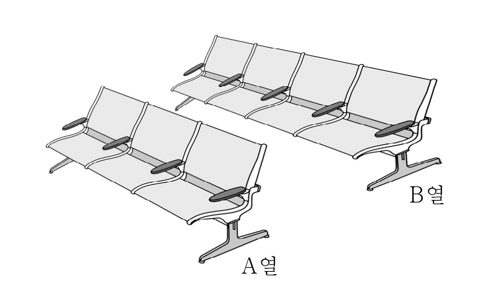

그림과 같이 열에 개, 열에 개로 구성된 총 개의 좌석이 있다. 학년 학생 명, 학년 학생 명, 학년 학생 명 모두가 이 개의 좌석 중 임의로 개씩 선택하여 앉을 때, 다음 조건을 만족시키도록 앉을 확률은? (단, 한 좌석에는 한 명의 학생만 앉는다.) [4점]
(가) 열의 좌석에는 서로 다른 두 학년의 학생들이 앉되, 같은 학년의 학생끼리는 이웃하여 앉는다.
(나) 열의 좌석에는 같은 학년의 학생끼리 이웃하지 않도록 앉는다.

① ② ③ ④ ⑤
학생을 모두 구별해야 7!가지 앉는 방법이 똑같은 확률이 돼. 조건은 학년만 보니까, 자리마다 학년을 먼저 정하고 같은 학년 학생끼리 자리를 바꾸는 수를 곱하면 돼.
판단세 자리에 두 학년이면 한 학년이 2명, 다른 학년이 1명이야. 그 2명이 붙어 앉아야 하니까 가운데 끼는 배열만 빠져.
어느 학년이든 2명 이상 있어서 는 1, 2, 3 모두 되고, 는 남은 두 학년 중 하나야.
주의열 네 자리에서 서로 이웃하지 않게 고를 수 있는 자리는 많아야 두 개야(1번과 3번, 1번과 4번, 2번과 4번). 그래서 3학년 3명이 열에 다 가면 누군가는 붙어 앉아.
두 학년이 2명씩이면 6가지 학년 배열 중 같은 학년이 하나도 안 붙는 건 두 학년이 번갈아 앉는 두 가지뿐이야. 앞의 2는 열 배열 수야.
단축같은 학년 2명이 붙는 배열은 둘을 한 덩어리로 묶어 세 덩어리를 나열하면 이야. 전체에서 빼면 떨어진 배열이 나와.
여섯 경우는 열의 학년 구성이 서로 달라서 겹치지 않아. 그래서 학년 배열 수를 그대로 더하면 돼.
에서 나온 학년 배열 하나를 조건마다 넣어 봤어. 마지막 줄은 1, 2, 3학년마다 (열 인원)+(열 인원)이 2명, 2명, 3명으로 맞는지 본 거야.